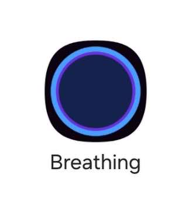
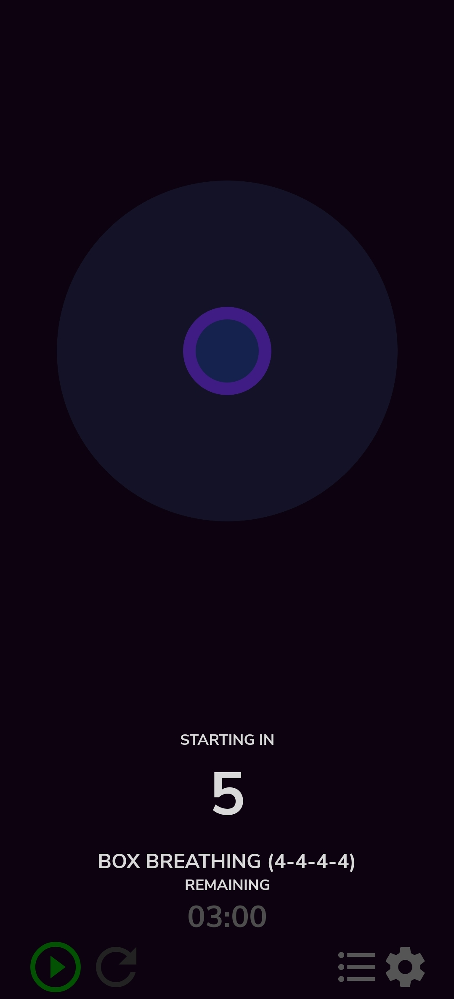
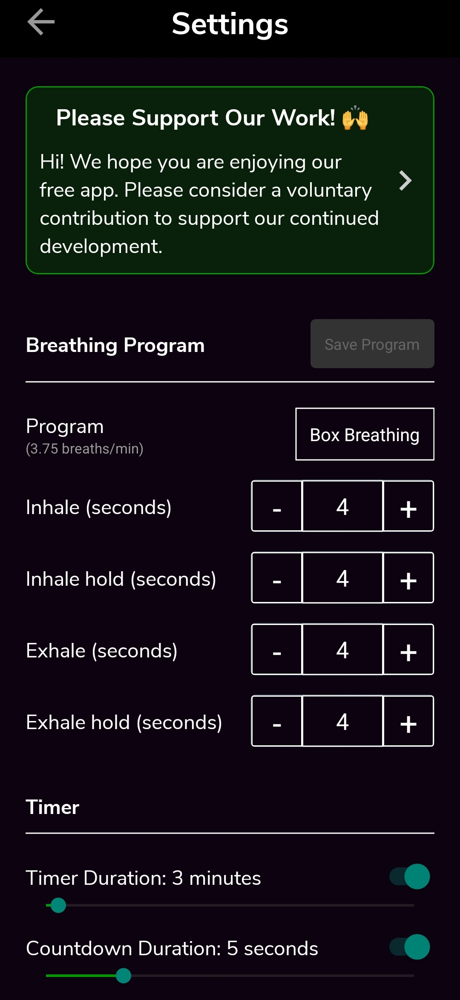
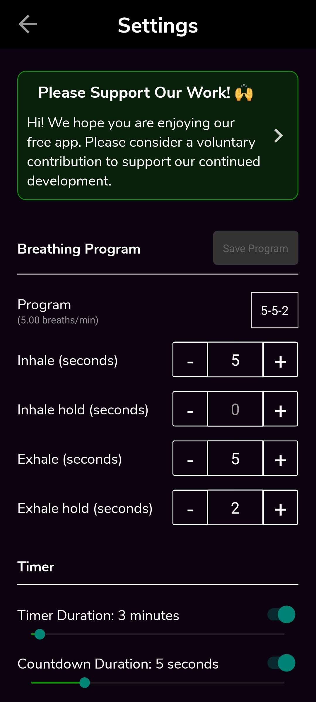
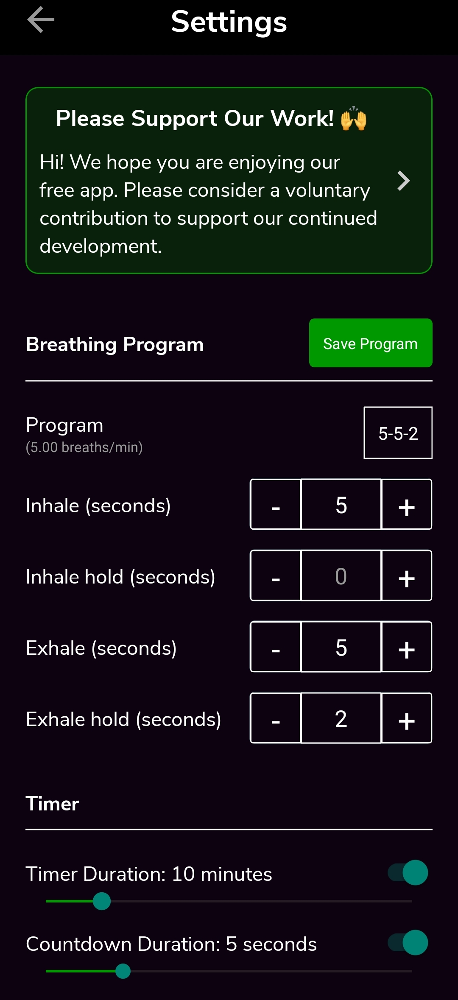
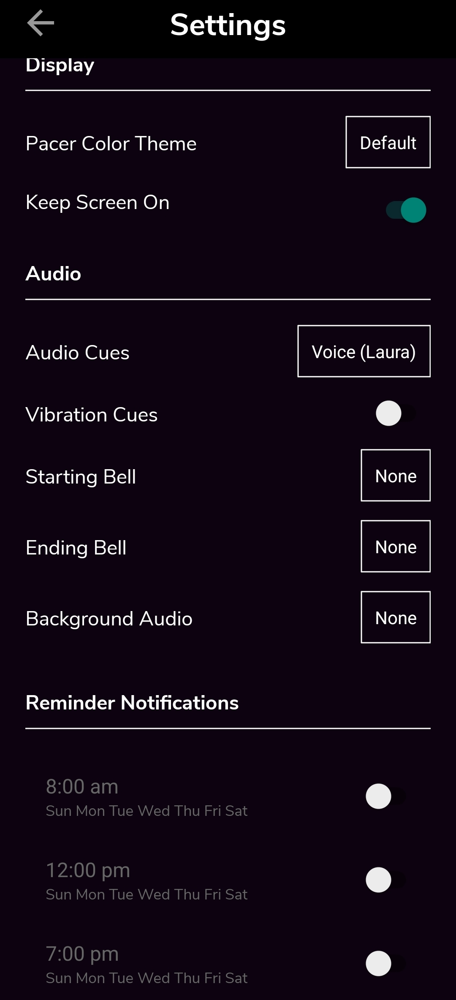

What Stress Is?
3:48What stress actually is, and why our bodies respond the way they do.
Part 1 · Welcome
Over the next 14 days you will learn and use a simple technique called slow-paced breathing. Previous research has found that it can noticeably improve day-to-day stress and mood, and that just ten minutes a day is enough.
This page walks you through everything you need, and includes four short videos about stress and health. It takes about 30 minutes, and the best way to follow it is with your phone next to you.
And that's all there is to it.
Part 2 · The technique
As the name suggests, it simply means breathing in slowly, breathing out slowly, and briefly pausing in between, at a much gentler pace than we usually breathe.
Breathing at this slower rhythm gives your body a clear, steady signal to settle. With a little practice it becomes something you can reach for whenever you need it. The short video below explains how it works and what to expect.
Part 3 · Your tool
To keep your breathing at the right pace, we'll use a small helper app called Awesome Breathing: Pacer Timer. On your phone it simply appears as “Breathing”.

Search for the name in your app store, or scan the code for your phone:
The video moves quickly, so grab your phone, open the app and follow along below. It only takes a couple of minutes.
When you open the app you'll see the main screen with a large circle. In the bottom-right corner there is a small gear icon. Tap it to go to the Settings screen.

In the middle of the Settings screen is the Breathing Program area. By default it is set to 4-4-4-4: breathe in for 4 seconds, hold for 4, breathe out for 4, hold for 4, and repeat.
In this study we'll use 5-0-5-2 instead, which we call 5-5-2 for short. It's a gentler rhythm that suits beginners better.


Just below, in the Timer area, drag the Timer Duration slider from the default 3 minutes up to 10 minutes. This is the length of your daily practice.

If you keep scrolling you'll find more options, such as the voice cues, starting and ending bells, and background audio. None of these affect the study, so set them however you like and feel free to explore.

Part 4 · The next 14 days
Starting tomorrow, and for the next 14 days, there are two things we'd like you to do each day.
Choose a free moment during the day. We suggest just after waking up or after lunch, but any daytime moment that suits you is fine.
At 8 pm a text message with a link will arrive on your phone. It opens a very short set of questions about how your day went. We've timed it ourselves: it really does take about one minute.
Each evening the questionnaire will ask whether you completed your ten minutes of breathing that day. Please answer truthfully. Your payment depends only on completing the daily questionnaires, not on whether you did the breathing practice, so an honest answer can never count against you.
We still warmly encourage you to practise every day, and you're welcome to adjust the length if you need to. A large body of research shows that slow breathing is genuinely helpful for everyday stress and anxiety.
| Task | Reward |
|---|---|
| Screening questionnaire | £0.50 already received |
| Baseline questionnaire | £1.00 already received |
| Daily questionnaires, 14 days from tomorrow | £0.50 × 14 = £7.00 |
| Total | £8.50 |
All rewards are calculated once the 14-day study has finished and paid together to your Prolific account.
Beyond the daily ten minutes, we encourage you to use slow breathing whenever you need it in everyday life. Deciding when and how long in advance makes that much more likely to happen, so let's fill in a tiny plan together:
Part 5 · Stress and health
Before we practise, we'd like to invite you to watch a short four-part series, The Silent Threat, made by our lab. Together the videos take about 15 minutes and explain how stress affects a person's health.
What stress actually is, and why our bodies respond the way they do.
What happens inside the body when stress sticks around for too long.
Why the mind keeps returning to worries, and how that keeps stress going.
What can happen when the stress system is pushed beyond its limits.
Part 6 · First try
Thank you for your patience. To finish, let's try a 3-minute slow-paced breathing session right now. Pick whichever option you prefer:
Open the app, press play, and follow the circle. For this first go, you can leave the timer at 3 minutes or just stop whenever you like.
Press play on the video below and breathe along. Sit comfortably, relax your shoulders, and let the pacer guide you.
Part 7 · You're all set
We're really glad you'll be joining us for the next 14 days.
Have a lovely day, and we'll see you tomorrow evening.